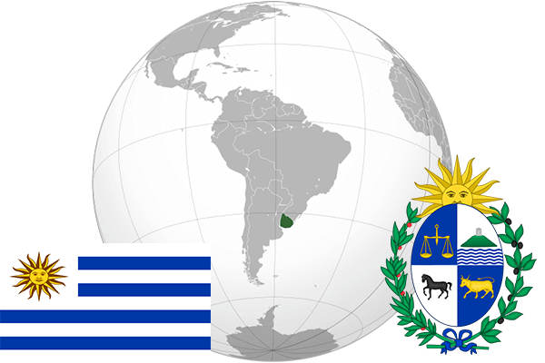

To`liq nomi: Urugvay Sharq Respublikasi
Region: Janubiy Amerikaning sharqiy qismi
Qonunchilik shakli: Respublika
Mustaqillik kuni: 25 avgust 1825-yil
Poytaxt: Montevideo
Maydoni: 176,220 km²
Chegaradosh davlatlari: Braziliya, Argentina
Aholisi: 3 404 189 (2014-yil)
Aholi zichligi: 19 /км²
Aholining o`rtacha yoshi: 77,14 yil
Rasmiy tili: Ispan tili
Dini: Xristian
Pul birligi: Urugvay Pesosi
Telefon prefiksi: +598
Internet domen: .uy
Xalqaro tashkilotlarga a`zoligi: BMT
Dengiz va okeanlarga chiqishi: Atlantika okeani
YIM: Butun: $65.8 mlrd (2017-yil)
Yirik shaharlari: Montevideo